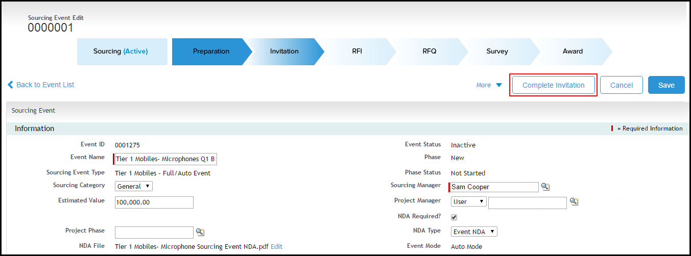

Inviting the Suppliers
Invitation is the phase where notifications are sent to the invited suppliers that the buyer has started the sourcing event. Invitation phase is initiated once you publish the event. The suppliers are invited to participate if they are interested. Youcan also prompt suppliers to sign an NDA before they participate in the sourcing event.
You can accept the invitation to a sourcing event on behalf of a supplier. If you have added a non-portal supplier (supplier who does not have an access to customer portal account or partner portal account), the invitation is auto-accepted.
Now, you can manage and resend emails to the suppliers. When you have more than 100 suppliers, the notifications to be sent to suppliers are divided in a batch. You can manage the batches using the Manage Emails functionality. If you are short of emails, and you want to send emails to specific suppliers, you can use the Resend Email functionality.
You can perform the following actions on the Invitation tab.
The Invitation tab will display the details like Supplier, Contact Name, Invitation Status, and Collaboration Level.
Use Case
Sam wants to invite suppliers to Tier 1 Mobiles - Microphones Q1 B1 Sourcing Event. Sam invites the following suppliers to the mentioned sourcing event:
- All Microphones Inc.
- Super Microphones
- Global Microphones
- Microphone House
The following table displays the Status and its Related Activity.
|
Invitation Status |
Related Activity |
|---|---|
|
Pending |
If the supplier hasn't accepted or declined the invitation. |
|
Accepted |
If the supplier has accepted the invitation. Note: The Invitation Status is set to Accepted for all users with no-portal access, by default. |
|
Declined |
If the supplier has declined the invitation. |
To accept the invitation on behalf of a supplier
To manage emails
To resend an email
Click Complete Invitation after the invitation is accepted by the suppliers.
Note
Skip this step if you have selected Auto Mode as Event Mode Type in sourcing event type. The phase progressions happen automatically with Auto Mode.

Note
A Phase Progression pop-up is displayed for the confirmation of completing the phase. Click Yes to proceed to next phase. Click No to continue working in the same phase.